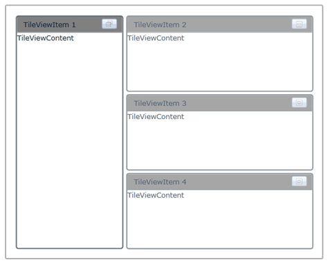

The size of the minimized TileViewItem can be set by using the MinimizedItemsPercentage property. The size of the minimized items is set in percentage. The percentage set is calculated relative to the total size of the control.
Adding Minimizing Item size to an Application
The minimizing item size can be added to an application by using either XAML or C# code.
Adding through XAML
The following code example illustrates how to add the minimizing item size to an application through XAML.
|
[XAML]
<syncfusion:TileViewControl x:Name="TileView1" Background="White" MinimizedItemsPercentage="60"> <syncfusion:TileViewItem BorderThickness="2" Header="TileViewItem 1" Content="TileViewContent" Margin="2" HeaderBackground="Gray" CornerRadius="3"/> <syncfusion:TileViewItem BorderThickness="2" Header="TileViewItem 2" Content="TileViewContent" Margin="2" HeaderBackground="Gray" CornerRadius="3"/> <syncfusion:TileViewItem BorderThickness="2" Header="TileViewItem 3" Content="TileViewContent" Margin="2" HeaderBackground="Gray" CornerRadius="3"/> <syncfusion:TileViewItem BorderThickness="2" Header="TileViewItem 4" Content="TileViewContent" Margin="2" HeaderBackground="Gray" CornerRadius="3"/> </syncfusion:TileViewControl>
|
Adding through C#
The following code example illustrates how to add the minimizing item size to an application through C#.
|
[C#]
TileViewControl Tile = new TileViewControl(); Tile.MinimizedItemsPercentage = 60; Tile.Background = new SolidColorBrush(Colors.White); for (int i = 1; i <= 4; i++) { TileViewItem item1 = new TileViewItem(); item1.HeaderBackground = new SolidColorBrush(Colors.Gray); item1.Margin = new Thickness(2d); item1.Content = "TileViewContent"; item1.Header = "TileViewItem - " + i; Tile.Items.Add(item1); } this.LayoutRoot.Children.Add(Tile);
|

Figure 1071: TileViewControl with MinimizedItemTemplate and MaximizedItemTemplate
Properties
Table 46: MinimizedItemTemplate / MaximizedItemTemplate Properties Table
|
Property |
Description |
Type |
Data Type |
Reference links |
|
MinimizedItemsPercentage |
Specifies the size for the Minimized TileViewItems. |
DependencyProperty |
(double)20 |
Events
Table 47: MinimizedItemsPercentageChanged Table
|
Event |
Description |
Arguments |
Type |
Reference links |
|
MinimizedItemsPercentageChanged |
The event gets fired when the minimized items percentage of theTileViewItems is changed. |
Sample Link
To view samples:
1. Select Start -> Programs -> Syncfusion -> Essential Studio x.x.xx -> Dashboard.
2. Select Run Locally Installed Samples in WPF Button.
3. Now expand the DragAndDropManagerDemo tree-view item in the Sample Browser.
4. Choose any one of the samples listed under it to launch.